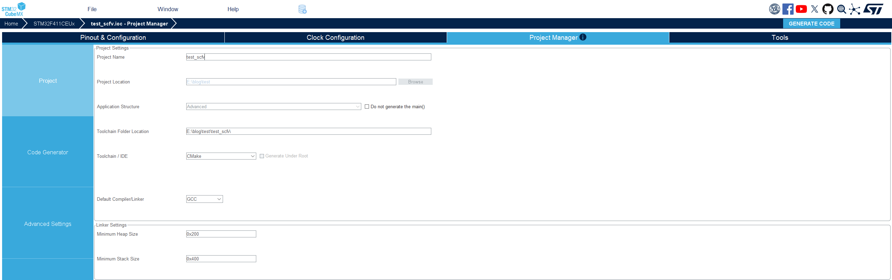
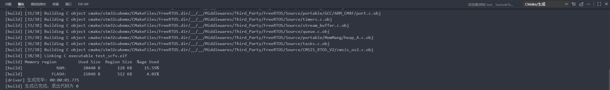
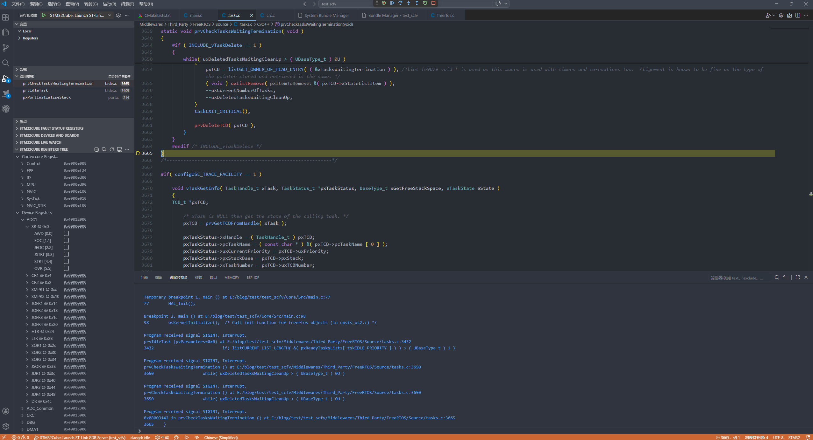

0. 背景
意法半导体针对 VScode 新出了一个插件 STM32CubeIDE for VSCode，其核心特性可从架构设计、工程部署、编辑-构建-调试全链路及增值工具四个维度展开，观看其演示流程，发现可以直接在 VScode 中通过 STlink/Jlink 对 STM32 目标板进行 Debug，实现就和 Keil5 一样的效果（外设及特殊处理寄存器信息、堆栈信息等都可以选择查看）。
1. 安装流程
2.1. 安装 VS Code
前往 https://code.visualstudio.com 下载并安装。建议勾选 “Add to PATH”。
2.2. 安装 STM32CubeMX
- 前往 https://www.st.com/stm32cubemx；
- 注册/登录 ST 账号后下载；
- 运行安装程序（需要 Java 运行时，安装程序会自动检测）；
- 安装完成后首次启动 CubeMX，它会自动下载所需的 MCU Firmware Packages；
2.3. 安装 STM32CubeCLT（可选）
- 前往 https://www.st.com/stm32cubclt；
- 选择对应操作系统；
- 安装到无空格、无中文的路径，例如：
- Windows: C:\ST\STM32CubeCLT
- Linux: /opt/st/stm32cubclt
注意：STM32CubeIDE for VS code 已于 25 年 10 月中旬转为 Release 版本并发布，完成了从 V2.x 到 V3.x 的重大升级。新版 VS Code 扩展移除了对 STM32CubeCLT 的依赖，转而引入 STM32Cube bundles manager 对插件的自动管理，该工具可自动下载、安装并更新 CLI 工具及 STM32 器件支持文件。开发者无需单独再下载安装 STM32CubeCLT 包，手动安装 Cmake 工具，也不需要手动设置工具路径等操作，一键安装就能完成安装，即可使用最新编译器或享用对最新 STM32 器件的支持。^[2]^
2.4. 安装 STM32 VS Code Extension
- 打开 VS Code；
- 进入 Extensions（Ctrl+Shift+X）；
- 搜索 STM32CubeIDE for Visual Studio Code；
- 点击 Install（会自动安装整个扩展包，包含一些子扩展）。
2. 工程新建、构建与调试
2.1. 工程新建
- 打开 STM32CubeMX；
- 选择芯片型号；
- 配置引脚、时钟、外设；
- Project Manager 设置：
- Toolchain / IDE: 选择 CMake
- Project Location: 选择你的工作目录
- 点击 Generate Code；
- 在 VS Code 中打开生成的项目文件夹。

* Project Manager 设置示意
注意：在配置时，先勿勾选低功耗配置，即将所有引脚配置为模拟模式，这样将会失能掉 SWD 功能，导致后续在调试时无法正常进行，仅能重新擦除芯片 flash 进行恢复。
2.2. 工程构建
在 VS Code 通过 Ctrl+Shift+P 调出命令面板，输入 CMake: Build 命令进行构建，构建产物位于 build/ 目录下，生成 .elf 和 .map 文件。

* 构建结果输出
若需要输出 .bin 文件，需打开项目根目录的 CMakeLists.txt 文件，在文件末尾添加以下内容：
1 | # ============================================ |
若想要清理构建结果，通过 Ctrl+Shift+P 调出命令面板，输入 CMake: Clean 命令进行清理。
2.3. 调试
将目标板通过 STlink 连接电脑，在 VScode 界面选择左侧 “运行与调试” 并选择 STlink 进入调试，具体过程参考 Get started with STM32Cube for VS Code: from installation to debugging。

* 进入调试
此时，便可达到和 Keil5 Debug 同样的效果了，外设及特殊处理寄存器信息、堆栈信息等都可以选择查看。